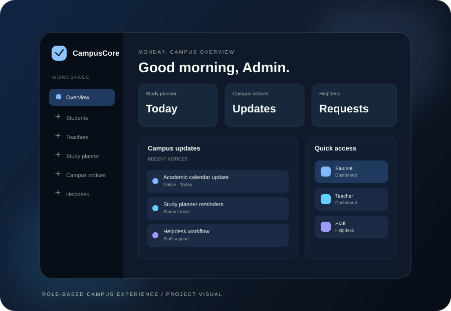

PROJECT DETAILS
Project details.

ILLUSTRATIVE CAMPUSCORE PREVIEWM
ACADEMIC PROJECT
Project overview
OVERVIEW / 01
The idea
behind the work.
Portfolio note: These are illustrative visuals. Replace them with real project screenshots and verify the content before sharing your portfolio.
SCOPE / 02
What it brings
together.
BUILD / 03
Tools &
technology.
REFLECTION / 04
Room to
keep improving.
Before sharing this case study publicly, add real screenshots, clarify your personal contribution and update this reflection with what you actually learned while building the project.
BACK TO THE COLLECTION